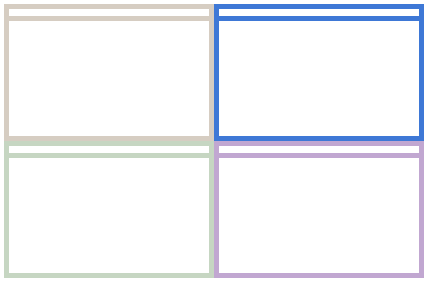

This program extends the functionality of the Windows 7 [Win][Arrow Keys] hotkeys, allowing you more control over your window layout.
By default, [Alt][Arrow Keys] will expand the window in the specified direction. By default, the window expands:
You can change these settings in the Configuration Panel. The window will never expand over monitor's border. To move a window over the edge of on monitor to another, use [Win][Arrow Keys].

|

|
| A window will expand until it hits the edge of the nearest window, or... | ... it will expand to the next grid cell of the screen. |
You can make smaller increments to the grid-based movement by using [Shift][Alt][Arrow Keys].
Take the case where you have a nice setup going, but one half of the monitor isn't quite wide enough. Using [Alt][Arrow Keys] on the blue window below will cause the window to overlap the brown, and the pink would no longer be aligned.
Instead, use [Ctrl][Alt][Arrow Keys] to keep them all in sync:
|  |

|
| Using [Ctrl][Alt][Arrow Keys] allows you to adjust the size of a window while preserving your window layout. | |